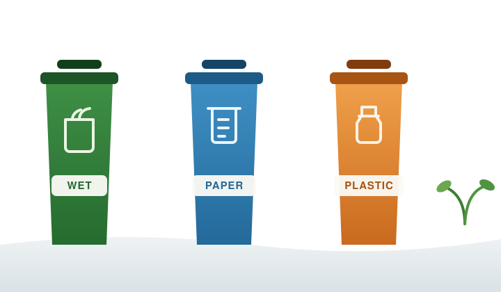
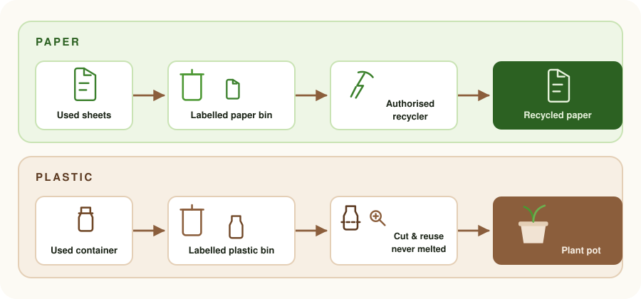
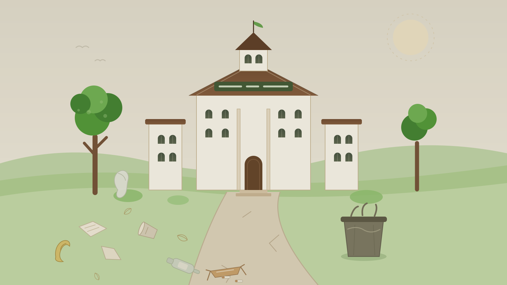
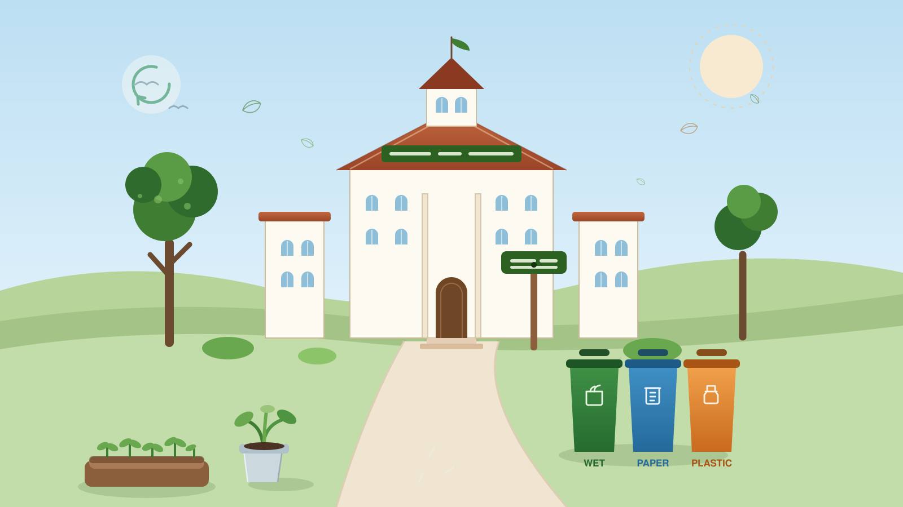

What the project is, which track it belongs to, why campus waste is the problem it attacks, and the everyday reality it has to work inside.

A practical campus-level sustainability initiative turning paper and plastic waste into useful, eco-friendly products.
The title states the shift the project is trying to make. A campus already produces waste — what it currently lacks is any structure for separating that waste, recovering what can be recovered, and putting it back to use. The project's five-step link — Reduce · Segregate · Reuse · Recycle · Review — is the spine of the whole approach, and it is a loop rather than a checklist: the review sends the learning back to the beginning.

Drag the handle. On the left, the campus as it looks now — untidy edges and mixed bins. On the right, the same campus once the plan is in place: clear paths, labelled stations and a garden that gets its pots from recovered plastic.


The core difficulty is not that the campus produces waste — every campus does. The difficulty is that the waste is mixed, so the recoverable parts are contaminated and the unusable parts are never isolated.
Used sheets, notes and paper scraps may be thrown away even when they can be recycled.
Disposable plastic containers and packaging can remain in the environment for a long time.
Mixed waste increases litter, makes recycling difficult and wastes materials that still have value.
Any campus waste plan is only as good as the habits, spaces and people it is designed around. These are the conditions we are working with — and each one has a direct answer.
Four students of Environmental Studies (EVS), working as one team on a single campus problem.
Reduce, segregate, recycle, reuse and educate — each one mapped to an EVS unit and to something that can start on campus this week.